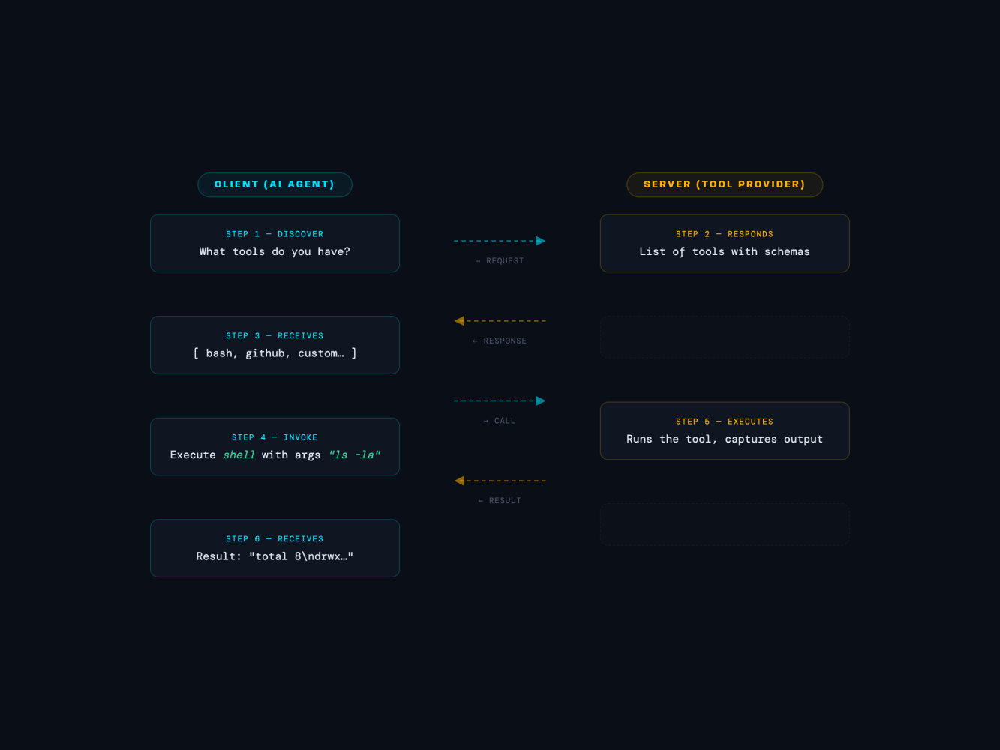
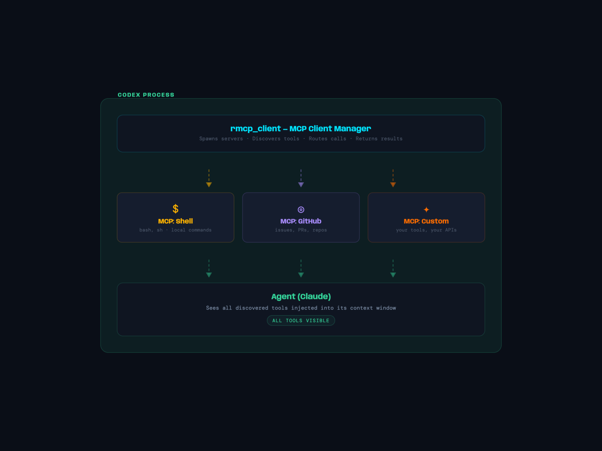
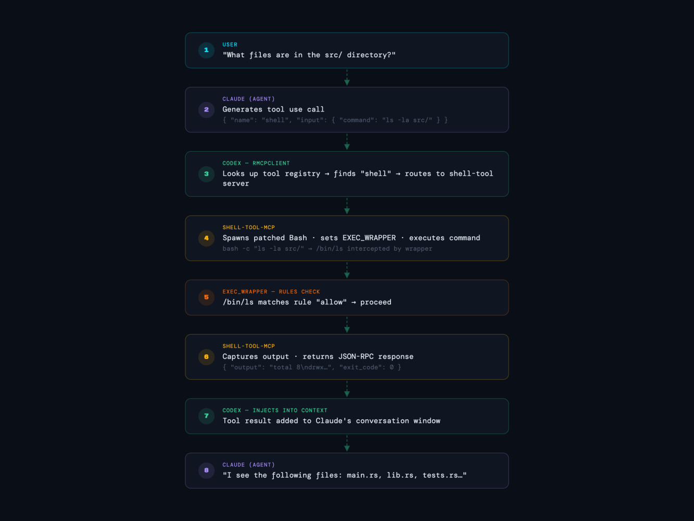
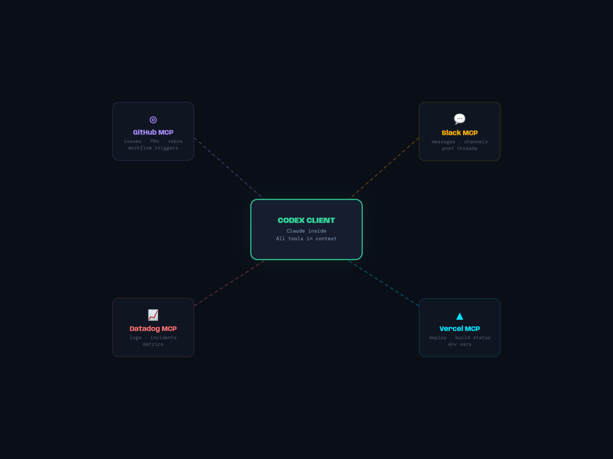

The Swiss Army Knife: MCP, Tools, and the Plugin Ecosystem
Welcome back to our journey through Codex's architecture. In Part 5, we explored how Codex manifests in four different frontends—TUI, exec, app-server, MCP server. But we only touched the surface of MCP's real power.
Here's the thing: Codex as a tool for other agents is cool. But what if Codex, while solving problems, could call hundreds of external tools? What if it could discover plugins, invoke APIs, query databases, and collaborate with other AI services in real time?
This is Part 6. This is where Codex becomes more than an agent. It becomes an agent platform.
The Eureka Moment: MCP as USB for AI
Think about USB. In the '90s, every device had proprietary connectors. Printers, keyboards, and cameras are all incompatible. Then USB came along. One protocol. One shape. Suddenly, any device could talk to any computer.
Model Context Protocol (MCP) is USB for AI.
What is MCP?
MCP is a standardised protocol that lets AI models (Claude, others) request information from, or invoke tools on, external systems. It's not specific to Codex. It's not specific to OpenAI. It's an open specification that any AI agent can speak.
Here's the protocol at its core:

It's JSON-RPC 2.0 over stdio (or HTTP, or WebSocket). Messages flow in both directions. The agent asks, the server responds. The server never initiates, the agent is always in control.
Why MCP Matters for Codex
Without MCP, Codex could only:
- Run shell commands
- Read files
- Apply patches
With MCP, Codex can:
- Query your company's API
- Read from Jira, GitHub, Slack, Asana
- Run custom linters and type checkers
- Execute Python scripts that return structured data
- Call specialized AI models (Claude for reasoning, DALL-E for images, Grok for indexing)
- Trigger CI/CD pipelines
- Deploy code to production
Each of these is a tool server, an MCP server that exposes capabilities. Codex connects to them all, discovers their tools, and knows when and how to use them.
Deep Dive 1: Codex as MCP Client
In Part 5, we saw Codex as an MCP server. Now flip it: Codex is also an MCP client.
The Architecture
When you start Codex, before it talks to Claude, it:
- Reads config from ~/.codex/config.toml
- Spawns MCP servers (from the [mcp_servers] section)
- Discovers their tools (via list_tools request)
- Injects tool definitions into Claude's context
- Routes tool calls to the correct server
- Returns results to Claude

rmcp-client: The Orchestrator
The rmcp_client crate (in /codex-rs/rmcp-client/src/rmcp_client.rs) is Codex's MCP client. Let's understand its key responsibilities.
Initialization & Discovery:
pub struct RMcpClient {
servers: HashMap<String, ChildProcess>,
tool_registry: ToolRegistry,
}
impl RMcpClient {
pub async fn initialize(&mut self) -> Result<()> {
// 1. Spawn all configured MCP servers
for (name, config) in self.config.mcp_servers {
let process = Command::new(&config.command)
.args(&config.args)
.spawn()?;
self.servers.insert(name.clone(), process);
}
// 2. Discover tools from each server
for (name, server) in &mut self.servers {
let tools = server.list_tools().await?;
self.tool_registry.register(name.clone(), tools);
}
Ok(())
}
}Tool Call Routing:
When Claude says "I need to use the shell-tool," the routing logic determines which MCP server handles it:
pub async fn call_tool(
&mut self,
tool_name: &str,
arguments: serde_json::Value,
) -> Result<serde_json::Value> {
// 1. Look up which server provides this tool
let server_name = self.tool_registry.find_provider(tool_name)?;
// 2. Get the server's connection
let server = &mut self.servers[server_name];
// 3. Make the tool call
let result = server.call_tool(tool_name, arguments).await?;
// 4. Return result to Claude
Ok(result)
}Connection Management:
The client maintains persistent connections to servers:
pub struct McpServerConnection {
process: Child,
stdin: BufWriter<ChildStdin>,
reader: BufReader<ChildStdout>,
request_id_counter: u64,
}
impl McpServerConnection {
async fn send_request(&mut self, method: &str, params: Value) -> Result<Value> {
let request_id = self.request_id_counter;
self.request_id_counter += 1;
let message = json!({
"jsonrpc": "2.0",
"id": request_id,
"method": method,
"params": params,
});
// Send to server stdin
self.stdin.write_all(message.to_string().as_bytes()).await?;
self.stdin.flush().await?;
// Wait for response (matching on request_id)
loop {
let response = self.reader.read_line(&mut self.buffer).await?;
let msg: JsonRpcMessage = serde_json::from_str(&response)?;
if msg.id == request_id {
return Ok(msg.result);
}
}
}
}Deep Dive 2: Connector Management via Config
MCP servers are configured in ~/.codex/config.toml. The connectors crate (in /codex-rs/connectors/src/lib.rs) manages their lifecycle.
Configuration Format
[mcp_servers]
# Built-in shell tool
[mcp_servers.shell-tool]
command = "bash"
args = ["-i"]
# GitHub connector
[mcp_servers.github]
command = "npx"
args = ["-y", "@anthropic-sdks/github-mcp-server"]
env = { GITHUB_TOKEN = "$CODEX_GITHUB_TOKEN" }
# Custom API server
[mcp_servers.internal-api]
command = "/usr/local/bin/my-mcp-server"
args = ["--port", "9876"]The ConnectorManager
The ConnectorManager (in connectors/src/lib.rs) handles:
- Loading connectors from the directory
- Caching tool lists (TTL-based)
- OAuth handling for authenticated connectors
pub struct AllConnectorsCacheKey {
chatgpt_base_url: String,
account_id: Option<String>,
chatgpt_user_id: Option<String>,
is_workspace_account: bool,
}
const CONNECTORS_CACHE_TTL: Duration = Duration::from_secs(3600); // 1 hour
pub fn cached_all_connectors(cache_key: &AllConnectorsCacheKey) -> Option<Vec<AppInfo>> {
let mut cache_guard = ALL_CONNECTORS_CACHE.lock().unwrap();
let now = Instant::now();
if let Some(cached) = cache_guard.as_ref() {
if cached.key == *cache_key && cached.expires_at > now {
return Some(cached.connectors.clone());
}
}
None
}Why cache? Because discovering tools from 10 servers takes time. Codex caches the list for 1 hour, then refreshes.
Deep Dive 3: The Skills System
Here's a clever twist: not all tools are external. Some are embedded in the Codex binary itself. These are called Skills.
System Skills vs. User Skills
System Skills: Embedded, built-in tools that come with Codex. Located in /codex-rs/skills/src/assets/samples/. Examples:
- bash: Run shell commands
- skill-creator: Create new skills
- git-helper: Common git operations
User Skills: Custom tools that you write. Located in ~/.codex/skills/. Examples:
- deploy-to-staging: Deploy your app
- run-tests: Run your test suite
- check-api-health: Check your API status
How Skills Work
The codex-rs/skills/src/lib.rs crate handles skill installation:
pub fn install_system_skills(codex_home: &Path) -> Result<(), SystemSkillsError> {
let skills_root = codex_home.join("skills");
let system_cache = skills_root.join(".system");
// Calculate fingerprint of embedded skills
let expected_fingerprint = embedded_system_skills_fingerprint();
// Check if already installed
if system_cache.exists()
&& read_marker(&system_cache).ok() == Some(expected_fingerprint)
{
return Ok(()); // Skip, already up to date
}
// Write embedded skills to disk
write_embedded_dir(&SYSTEM_SKILLS_DIR, &system_cache)?;
// Write marker file to detect future updates
fs::write(
system_cache.join(".codex-system-skills.marker"),
format!("{}\n", expected_fingerprint)
)?;
Ok(())
}Skills Manager Discovery
At startup, Codex discovers both system and user skills:
pub fn discover_skills(codex_home: &Path) -> Result<Vec<Skill>> {
let mut skills = Vec::new();
// 1. System skills
let system_path = codex_home.join("skills").join(".system");
for entry in fs::read_dir(&system_path)? {
let skill = load_skill_from_dir(&entry?.path())?;
skills.push(skill);
}
// 2. User skills
let user_path = codex_home.join("skills");
for entry in fs::read_dir(&user_path)? {
if entry.path().is_dir() && entry.file_name() != ".system" {
let skill = load_skill_from_dir(&entry?.path())?;
skills.push(skill);
}
}
Ok(skills)
}Skill Injection
Skills are injected into Claude's context as tools. Each skill is a YAML/TOML file (e.g., deploy-to-staging/SKILL.md) that describes:
---
name: deploy-to-staging
description: Deploy the app to staging environment
tools:
- name: run-deploy
description: Execute deployment
input_schema:
type: object
properties:
branch:
type: string
description: Git branch to deploy
---
# Skill implementation (Python, Bash, etc.)
...When Claude executes a skill, Codex injects the skill's context (environment variables, working directory, secrets) and runs it.
Deep Dive 4: Shell-tool-MCP Internals
Now let's go deep on the most important MCP server: shell-tool-mcp (in /shell-tool-mcp/). This is where Codex can execute arbitrary commands, but safely.
The Patched Bash
The shell-tool-mcp package bundles patched Bash binaries built for multiple glibc versions:
- Ubuntu 24.04, 22.04, 20.04
- Debian 12, 11
- CentOS/RHEL 9
- macOS 15, 14, 13
Why patched? Because Codex needs to intercept process execution at the kernel level. Here's how:
EXEC_WRAPPER Environment Variable
When Bash starts, it looks for an EXEC_WRAPPER environment variable:
export EXEC_WRAPPER=/path/to/wrapper
bashEvery time a shell command is about to execve() (the system call to spawn a new process), the patched Bash calls the wrapper first:
execve("/bin/ls", [...])
↓ (patched bash intercepts)
EXEC_WRAPPER called
↓
"Is /bin/ls allowed?"
↓ (check rules)
Yes → proceed
No → fail with errorThis is much more secure than trying to regex-match commands. Bash is asking the wrapper whether to execute.
Rules Files
Users define escalation rules in .rules files:
# .rules in your project
- path: "/bin/ls"
decision: allow
- path: "/usr/bin/python3"
decision: prompt
message: "Running Python. OK?"
- path: "/bin/rm"
decision: forbidden
message: "rm is not allowed in this sandbox"
# Glob patterns work too
- path: "/usr/local/bin/*"
decision: allowThe shell-tool-mcp server evaluates rules:
async function checkExecutionAllowed(
command: string,
path: string,
rules: Rule[]
): Promise<Decision> {
// Find matching rule
for (const rule of rules) {
if (minimatch(path, rule.path)) {
switch (rule.decision) {
case "allow":
// Escalate and run outside sandbox
return { allowed: true, escalate: true };
case "prompt":
// Ask human for approval via MCP elicitation
return { allowed: false, requiresApproval: true };
case "forbidden":
// Fail with error
return { allowed: false, escalate: false };
}
}
}
// No matching rule → allow by default (but keep sandbox)
return { allowed: true, escalate: false };
}Deep Dive 5: Tool Call Flow
Let's trace a complete tool call from start to finish.
Scenario: Claude Needs to List Files

This entire flow happens in milliseconds, with full observability. Every command is logged, every decision is audited.
The Plugin Ecosystem
Here's where things get exciting. Anyone can build an MCP server.
Building Your Own MCP Server
Let's say you want to create a Jira connector:
// jira-mcp-server.ts
import { MCPServer } from "@anthropic-sdks/mcp-sdk";
const server = new MCPServer({
name: "jira",
version: "1.0.0",
});
server.tool("fetch_issue", {
description: "Get a Jira issue by key",
input_schema: {
type: "object",
properties: {
issue_key: { type: "string", description: "e.g., PROJ-123" },
},
required: ["issue_key"],
},
async handler(params) {
const response = await fetch(
`https://your-jira.atlassian.net/rest/api/3/issue/${params.issue_key}`,
{
headers: {
Authorization: `Bearer ${process.env.JIRA_TOKEN}`,
},
}
);
return await response.json();
},
});
server.tool("create_issue", {
description: "Create a new Jira issue",
input_schema: { ... },
async handler(params) { ... }
});
server.listen();Now add to your config.toml:
[mcp_servers.jira]
command = "node"
args = ["/path/to/jira-mcp-server.js"]
env = { JIRA_TOKEN = "$JIRA_API_TOKEN" }Restart Codex, and Claude can now:
- Search Jira
- Create issues
- Add comments
- Transition workflows
All without modifying Codex itself. That's the power of MCP.
The Ecosystem Vision
Imagine:
- GitHub MCP: PR review, branch creation, workflow triggers
- Slack MCP: Send messages, query channels, post threads
- Datadog MCP: Query logs, create incidents, check metrics
- Vercel MCP: Deploy, check build status, manage environment variables
- Your Company's MCP: Query internal APIs, check compliance, access business logic
Codex becomes a central hub that talks to all your tools. Claude, inside Codex, can orchestrate workflows across your entire tech stack.

Security: The Rules Gauntlet
With great power (many tools) comes great responsibility. How does Codex keep you safe?
Layers of Defense
- Rules Files: Per-project .rules files define what's allowed
- Process Sandboxing: Each MCP server runs in isolation
- Approval Workflows: Prompt rules require human sign-off
- Audit Logging: Every tool call is logged with context
- Token Management: Secrets injected via environment, never logged
Example rules file:
# .rules
# Shell commands
- command: "/bin/rm"
decision: forbidden
- command: "/usr/bin/python3"
decision: prompt
- command: "/bin/ls"
decision: allow
# API calls
- api: "github.com/*"
decision: allow
- api: "internal-api.company.com/admin/*"
decision: forbidden
- api: "internal-api.company.com/data/*"
decision: promptCodex learns these rules over time and generally avoids requesting forbidden actions.
The Cliffhanger: What Next?
We've explored how Codex connects to tools. We've seen skills, MCP servers, and the ecosystem potential.
But we haven't asked: What about scaling?
What if you're running Codex in production? In CI/CD? With thousands of tool calls per day? How does it stay fast? How does it handle failures, retry logic, and connection pooling?
What about security at scale? How do you manage rules across a whole organisation? How do you audit who ran what? How do you prevent rogue tools from exfiltrating data?
In Part 7, we'll explore deployment, scaling, and the production gauntlet. We'll see how Codex goes from a beautiful system in a dev's terminal to a bulletproof service handling enterprise workloads.
With great power comes great responsibility. How does Codex keep you safe? The safety net goes deeper than you think...
Originally published on LinkedIn.